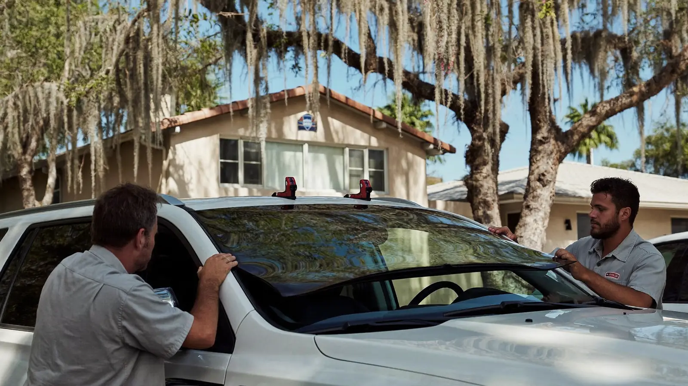
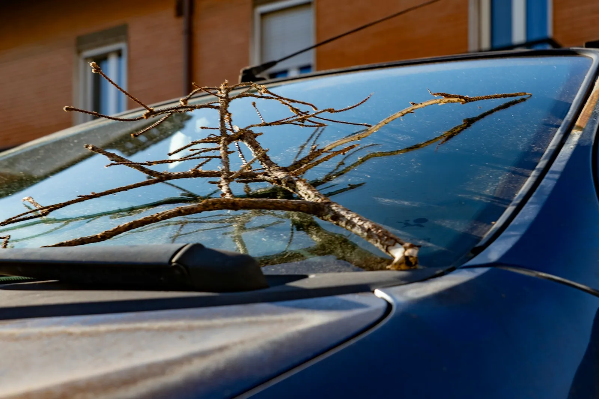
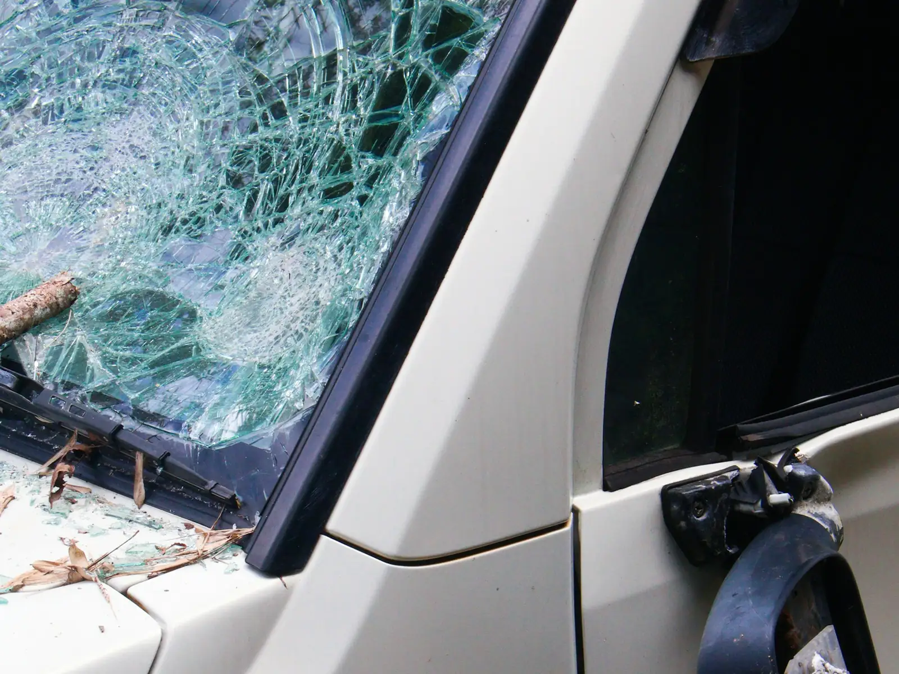
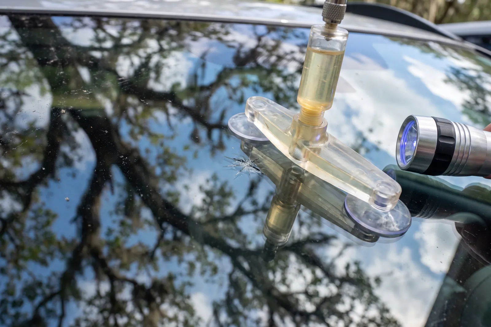
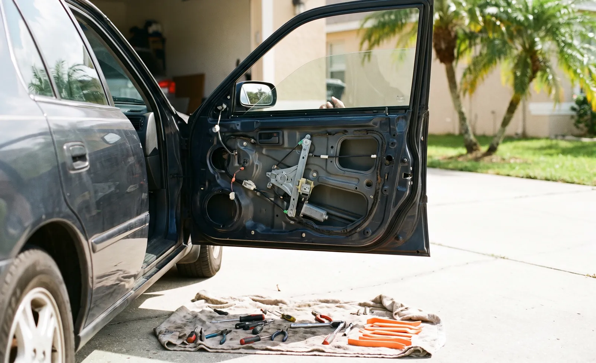
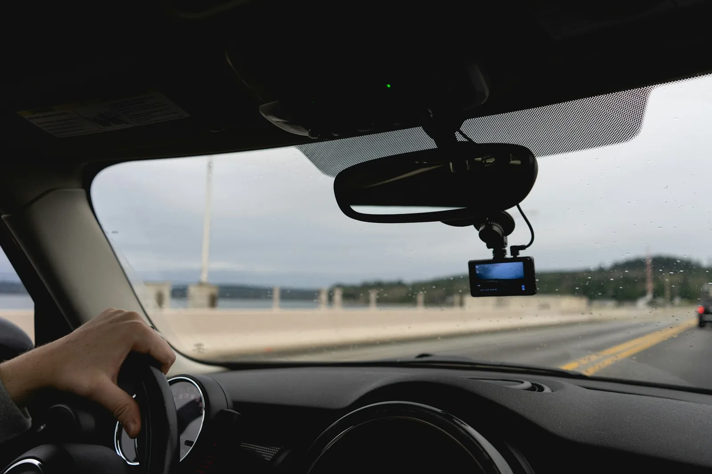

Cracked windshield, chipped glass or a broken side window? Rockledge Auto Glass Repair comes to your driveway or office, fixes the glass on site and handles the insurance paperwork with you.

Auto glass, explained
Auto glass repair covers any work on the glass in your car or truck: filling a rock chip with resin, replacing a cracked windshield, swapping a shattered side or rear window, and re-aiming the safety cameras that look through the glass. In Rockledge, most of that damage comes from the daily drive on I-95 and US-1, where trucks and construction traffic throw gravel at highway speed.
The windshield is more than a window. It helps hold the roof up in a rollover and gives the passenger airbag something to push against, so it has to be bonded to the frame the right way. That is the part of the job a trained auto glass technician is paid to get right.

Signs it’s time
Most drivers call an auto glass shop after one of a handful of moments. If one of these sounds familiar, the glass needs attention soon.
A loud tick, then a small star or bullseye in the glass. This is the best time to call, while resin repair still works.
Cold AC blasting on hot glass makes chips spread fast in a Florida summer. Once a crack runs, the windshield usually has to be replaced.
Live oaks shed branches in afternoon thunderstorms and hurricane winds. Falling limbs crack windshields and shatter side glass.
Side and rear windows are tempered glass, so they burst into small pieces. The car is open to rain until the glass is replaced.
A dash light for lane-keep or collision warning after new glass usually means the camera was never recalibrated.
Whistling at highway speed or water at the top of the glass points to a bad seal from an earlier install.
What to expect
A mobile windshield replacement follows the same steps every time, whether the car is parked in a driveway off Fiske Boulevard or in an office lot near Barnes Boulevard.
You call or send the form with your vehicle and the damage. We confirm the exact glass your car needs, including sensors, heating or a heads-up display.
If you are filing a claim, we help you start it and confirm coverage before the visit. If you are paying yourself, you get the quote in writing first.
The technician covers the hood and dash, cuts out the old glass, trims the old urethane and primes the frame so the new bond holds.
A fresh urethane bead goes down and the new windshield is set and centered. Mirrors, sensors and moldings go back on.
We tell you the safe drive-away time for the adhesive used, recalibrate cameras when needed and leave the car clean of glass.
What we fix
Every service below is done on site at your home or work. Pick the one that matches your damage to see how it works, or view the full list of auto glass services.

New glass for cracks that run, spread or sit in the driver’s view.
See windshield replacement →
Resin repair that stops a fresh chip before it turns into a crack.
See rock chip repair →Back glass replaced, defrost lines reconnected, broken glass cleaned out.
See rear window replacement →
Side windows and vent glass, including off-track and broken regulators.
See door glass replacement →
Lane-keep and braking cameras re-aimed after new windshield glass.
See ADAS camera calibration →Why call us
Rockledge drivers pick a glass shop for three reasons: they show up where the car is, they get the glass right, and they do not leave the safety systems for someone else to sort out.
Driveway, apartment lot or office parking. In storm season we schedule around the afternoon rain and use your garage or a covered spot when the forecast turns.
We match OEM or OEE glass to your exact trim and follow the ANSI/AGRSS 002 auto glass replacement standard for prep, primers and urethane.
If your windshield carries a lane-keep or braking camera, calibration is part of the plan from the first call, not a surprise afterward.
Cost
The cost of auto glass repair depends on what broke and what is built into the glass. A resin chip repair is the smallest job. A windshield with a rain sensor, heated wiper area, acoustic layer or heads-up display costs more than plain glass, and a car with a forward camera adds a calibration step.
Insurance changes the picture the most. Under Florida Statute 627.7288, drivers with comprehensive coverage usually pay no deductible on windshield repair or replacement. Side and rear windows fall under your normal deductible. Call for a free quote and we will check your vehicle and coverage before any work starts.
Self-check
Mobile auto glass service fits most cars, trucks and SUVs on the road in Brevard County. A few jobs are better suited to a different kind of shop.
Questions
In most cases, yes. Florida Statute 627.7288 says the deductible on a comprehensive auto policy does not apply to windshield damage, so drivers with comprehensive coverage usually pay nothing out of pocket for windshield repair or replacement. Side and rear glass are not part of that rule, so your normal deductible applies to those.
The install itself takes about an hour on most cars and trucks. After that the urethane needs time to set before the car is safe to drive, usually one to three hours depending on the adhesive, the heat and the humidity. Plan on a half-morning or half-afternoon from start to finish.
A chip smaller than a quarter, or a single crack shorter than about six inches, can often be repaired with resin. Damage that sits right in the driver’s line of sight, reaches the edge of the glass or has spread into a long crack usually needs a new windshield. A quick description of the size and spot is enough for us to tell you which one you are looking at.
Yes. Rockledge Auto Glass Repair is a mobile service, so the technician comes to your driveway, your office lot or your apartment parking space. All we need is a level spot and, during afternoon storms, a garage or covered space so the glass stays dry while the adhesive cures.
If your car has lane-keep assist, automatic emergency braking or adaptive cruise, the camera is usually mounted behind the windshield and needs to be recalibrated after new glass goes in. Even a small change in the camera angle can make those systems react late or not at all. We check for it on every replacement and tell you up front if your vehicle needs it.
Florida law requires a windshield that lets the driver see the road clearly, and an officer can cite a car whose cracks block the view. A small chip outside your line of sight is not likely to get you pulled over, but chips grow fast in summer heat. Fixing it while it is small is cheaper and keeps the glass strong.
Look at three things: size, location and depth. A small chip away from the edges and outside the driver’s view is a repair job. A crack longer than a dollar bill, damage at the edge of the glass, or a break that goes through both layers of glass means replacement.
We install OEM glass from the vehicle maker or OEE glass built to the same size, shape and clarity specs, and we tell you which one you are getting before the work starts. Cars with heads-up displays, rain sensors or acoustic glass get glass made for those features. We never swap in a part that would knock out a feature your car came with.
Call now for a free auto glass quote. A chip fixed this week costs far less than a windshield next month.
Call (321) 587-3863 Now2020 Murrell Rd, Rockledge, FL 32955
Please note: This is our service business address — not a storefront or showroom. Rockledge Auto Glass Repair is a mobile auto glass service, so we come to you and the office isn’t open to walk-in visitors. Call us and we’ll set up a free quote.